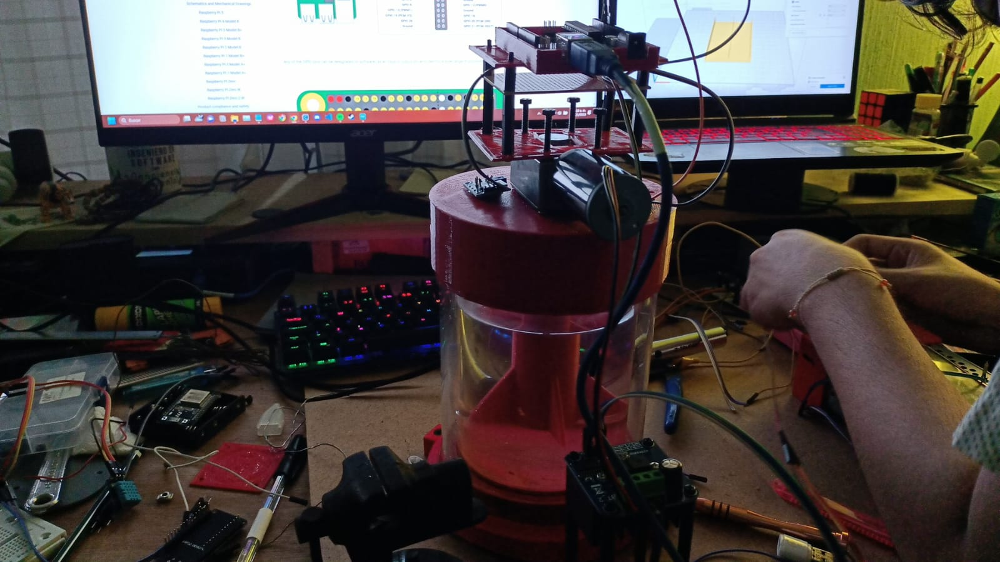

Los reactores batch son dispositivos utilizados en procesos químicos e industriales donde las sustancias químicas se mezclan y reaccionan en lotes o porciones discretas. A diferencia de los reactores continuos, en los que los productos químicos fluyen constantemente a través del sistema, en los reactores batch, los ingredientes se cargan en el reactor, se lleva a cabo la reacción, y luego se descargan los productos.
Estos reactores son versátiles y se utilizan en una variedad de industrias, como la farmacéutica, la alimentaria, la química y la de procesamiento de materiales. Algunas de las ventajas de los reactores batch incluyen la capacidad de cambiar fácilmente entre diferentes productos químicos o procesos, la capacidad de controlar las condiciones de reacción de manera más precisa y la posibilidad de realizar procesos en lotes pequeños para la investigación y desarrollo.
